Storyboard · Le voyage de Moussa
Le voyage de Moussa
Chaque plan du module, branches interactives comprises : images tirées de l’animation, direction visuelle, narration, textes à l’écran et interactions. Livrable 1, à valider avec les experts de l’ARAA.
Carte des embranchements
| Plan | Segment | Images | Direction visuelle (anglais) | Narration et sous-titres | Textes à l’écran |
|---|---|---|---|---|---|
| 1 | title 7s Version linéaire (WhatsApp) |
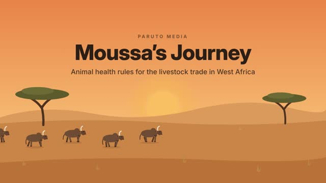  |
Dawn over the Sahel: sky gradient from #E7834A at the top to #F9D59C at the horizon, a large soft sun rising slowly, two flat acacia trees in dark olive silhouette, and five small dark-brown zebu cattle walking left to right along the horizon in a slow loop. From 0.8 s the title fades and slides up into the upper third: a small letter-spaced kicker "PARUTO MEDIA", the title "Moussa’s Journey" (very large, extra bold, #2B1E16) and the subtitle "Animal health rules for the livestock trade in West Africa" beneath it. | 0:01.2 Le voyage de Moussa : les règles sanitaires du commerce du bétail. | — |
| 2 | meet 9.5s Version linéaire (WhatsApp) |
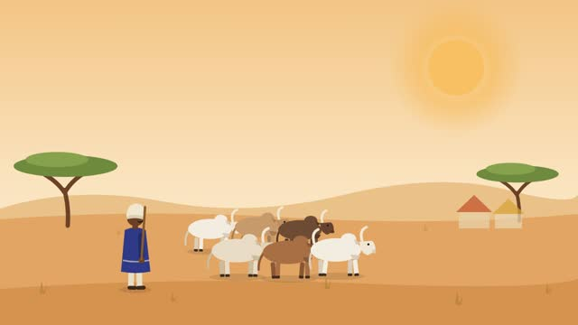  |
Daytime savanna: warm sky (#F2C584 to #FCEFD8), soft sand hills (#E9C189), ochre ground (#E2A564) with darker foreground (#D6934F), two green acacias and two small market stalls far right. Moussa walks in from the left and stops left of centre: a West African livestock trader in a long indigo boubou (#2E3A87), cream turban and a wooden staff. Six zebu cattle (white, tan and dark brown, with humps and lyre-shaped horns) walk in from the left in two rows and settle in the centre. At 3.6 s a cream speech-bubble name tag pops above Moussa: "Moussa · livestock trader". At 5.6 s a teal pill badge with a small cattle icon pops above the herd: "× 40 cattle". | 0:07.4 Voici Moussa, commerçant de bétail au Sahel. 0:11.5 Il veut vendre 40 bœufs sur un grand marché, de l’autre côté de la frontière. |
— |
| 3 | diseases 9s Version linéaire (WhatsApp) |
  |
Abstract map board, not a real map: cream background (#FBF1DF) with a fine dot pattern. Five round town markers (cream circles with a small terracotta house icon) pop in, linked by six curved sand-coloured routes that draw on one after another. Tiny cattle walk along the routes continuously. From 3 s, red spiky virus icons appear riding with three of the animals and pulse; the routes those animals travel turn red as they go. From 4.6 s three cream pill labels with a red dot slide in at top left, one by one: "Contagious bovine pleuropneumonia", "Foot-and-mouth disease", "Peste des petits ruminants". No country borders, names or flags. | 0:16.8 Les animaux voyagent d’un pays à l’autre… et les maladies voyagent avec eux. 0:20.9 Une seule bête malade peut contaminer d’autres troupeaux tout au long de la route. |
— |
| 4 | choice1 9.3s (pause) Version linéaire (WhatsApp) |
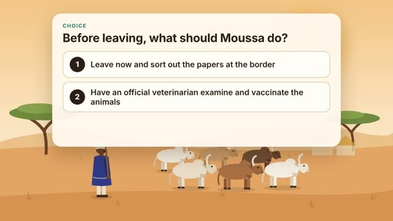 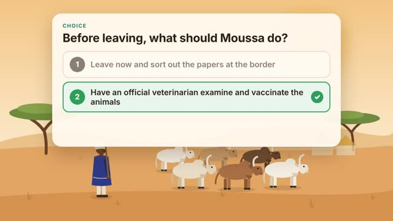 |
The savanna from the previous scene, herd and Moussa idle (the name tag and badge are gone). A large cream card (rounded corners, soft shadow) slides down into the upper half. Small teal uppercase label "Choice", the question in large bold text, then two option rows with numbered dark circles: 1 and 2 (texts below). From 1.4 s to 4.4 s show the line "Pause the video and choose: 1 or 2?" with a 3, 2, 1 countdown in an orange ring. At 4.6 s option 2 turns green with a white check mark in a green circle; option 1 dims to half opacity. | 0:25.8 Avant de partir, que doit faire Moussa ? 0:30.3 Réponse 2 : le contrôle sanitaire commence avant le départ. |
Avant de partir, que doit faire Moussa ? 1. Partir tout de suite et régler les papiers à la frontière 2. Faire examiner et vacciner ses animaux par un vétérinaire officiel Interaction 1 → mauvaise réponse, blocked1 2 → bonne réponse, vet |
| 5 | blocked1 9.4s Version interactive seulement |
 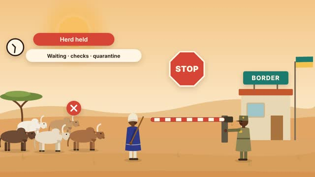 |
Branche : conséquence d’un mauvais choix, puis retour au choix. | +0.3s Sans certificat sanitaire, le troupeau est arrêté à la frontière. +4.2s Contrôles, attente, risque de quarantaine : Moussa perd du temps et de l’argent. |
— Interaction Branche : conséquence d’un mauvais choix, puis retour au choix. |
| 6 | vet 15.6s Version linéaire (WhatsApp) |
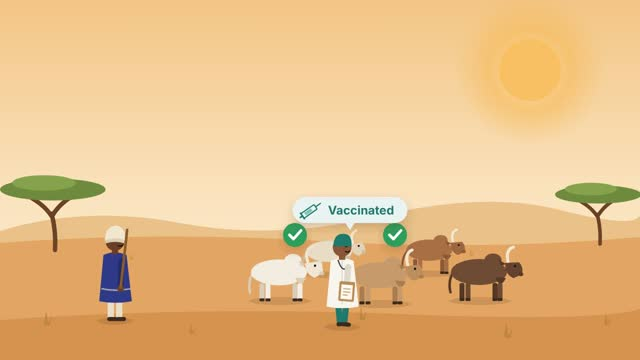 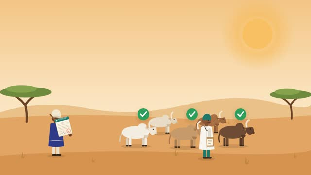 |
Same savanna, five cattle standing still, Moussa on the left. The official veterinarian walks in from the left: white coat, teal cap, teal trousers, stethoscope, clipboard. He stops in front of each front cow in turn (about 2.0 s, 3.6 s, 5.2 s), arm raised as if examining, and a green circle with a white check pops above each cow (2.4 s, 4.0 s, 5.6 s). At 3.0 s a pale-teal pill with a syringe icon pops: "Vaccinated". At 6.0 s a certificate card bounces in at upper right: cream paper, teal header reading "INTERNATIONAL ANIMAL HEALTH CERTIFICATE", grey text lines drawing on one by one, three small dots and "× 40", then at 7.3 s a red round stamp with a check slams on (scale from big to normal, tilted), and at 7.7 s a blue handwritten signature draws on. At 10.4 s the certificate shrinks and flies into Moussa's hand. | 0:35.1 Moussa appelle le vétérinaire officiel, qui examine et vaccine chaque animal. 0:40.4 Les animaux sont sains : le vétérinaire délivre un certificat zoosanitaire international. 0:46.2 Ce certificat accompagne le troupeau pendant tout le voyage. |
— |
| 7 | borderArrive 6s Version linéaire (WhatsApp) |
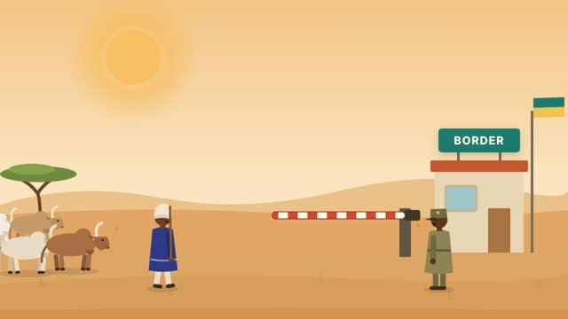  |
A border post on a dusty road: on the right a small cream building with a terracotta roof and a window, a teal sign on the roof reading "BORDER", a flagpole with a plain teal-and-yellow flag (not any real country's flag), and a red-and-white striped barrier arm lowered across the road from a dark post. A veterinary border officer in a khaki uniform and peaked cap stands to the right of the barrier, facing left. Moussa and the herd walk in from the left and stop in front of the barrier. | 0:50.7 À la frontière, un agent des services vétérinaires contrôle les documents et les animaux. | — |
| 8 | choice2 8s (pause) Version interactive seulement |
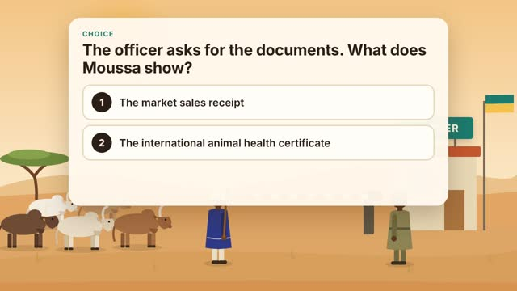 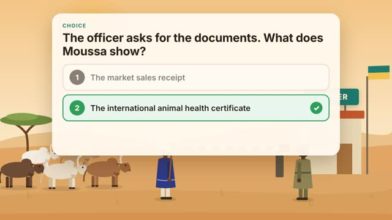 |
+0.3s L’agent demande les documents. Que présente Moussa ? | L’agent demande les documents. Que présente Moussa ? 1. Le reçu d’achat du marché 2. Le certificat zoosanitaire international Interaction 1 → mauvaise réponse, blocked2 2 → bonne réponse, borderCross |
|
| 9 | blocked2 7.5s Version interactive seulement |
 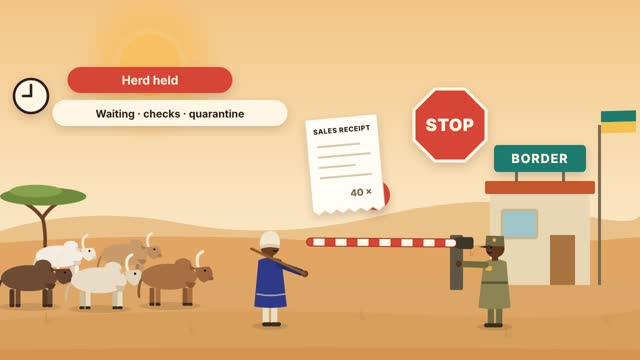 |
Branche : conséquence d’un mauvais choix, puis retour au choix. | +0.3s Un reçu d’achat ne prouve pas que les animaux sont en bonne santé. +3.9s Sans certificat, le troupeau ne passe pas. |
— Interaction Branche : conséquence d’un mauvais choix, puis retour au choix. |
| 10 | borderCross 12.2s Version linéaire (WhatsApp) |
  |
Continuing the border scene. At 0.1 s the certificate (same design, now with the red stamp and signature) pops up between Moussa and the officer; Moussa holds his arm out to hand it over. From 0.7 s to 1.9 s a magnifying glass sweeps across it. At 2.0 s a green rectangular stamp "VALID" slams onto the certificate, then the certificate fades. From 2.6 s to 3.6 s the barrier arm swings up. From 3.4 s Moussa and the herd walk through and out of frame to the right while the officer waves. | 0:56.6 Le certificat est valable et les animaux sont en bonne santé : la barrière se lève. 1:02.2 Les règles harmonisées de la CEDEAO donnent un cadre commun aux contrôles sanitaires dans toute la région. |
— |
| 11 | quiz 30s Version linéaire (WhatsApp) |
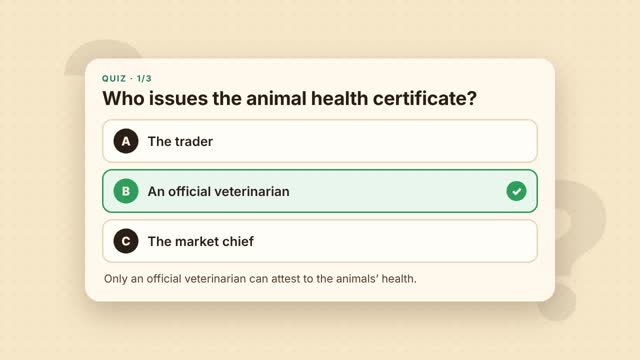 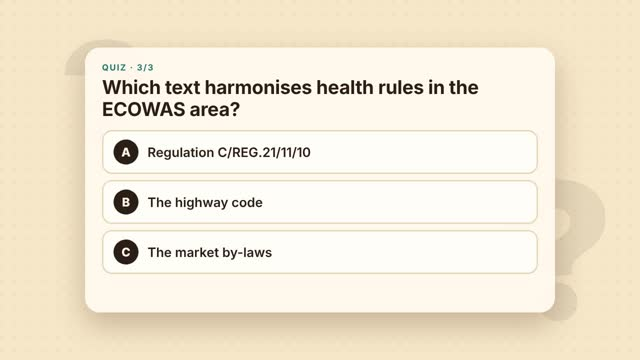 |
Warm cream background (#F7E7C9) with a dot pattern and two very large, faint, slowly rocking question marks. Three questions, 10 s each. Each fades in as a centred cream card: teal label "Quiz · 1/3" (2/3, 3/3), the question in large bold text, and three option rows with dark lettered circles A, B, C. At 4.3 s into each question the correct option turns green with a white check, the others stay, and a one-line explanation appears under the options. Each card fades out in its last 0.3 s. | Qui délivre le certificat zoosanitaire ? … Seul un vétérinaire officiel peut attester de la santé des animaux. Pourquoi contrôler les animaux aux frontières ? … Le contrôle protège les troupeaux, les consommateurs et les marchés. Quel texte harmonise les règles sanitaires dans l’espace CEDEAO ? … Il fixe les règles de santé animale, végétale et de sécurité des aliments. |
1. Qui délivre le certificat zoosanitaire ? A. Le commerçant · B. Un vétérinaire officiel · C. Le chef du marché 2. Pourquoi contrôler les animaux aux frontières ? A. Pour empêcher la propagation des maladies · B. Pour ralentir le commerce · C. Pour compter les animaux 3. Quel texte harmonise les règles sanitaires dans l’espace CEDEAO ? A. Le Règlement C/REG.21/11/10 · B. Le code de la route · C. Le règlement du marché Interaction Trois questions. Interactive : le spectateur répond, voit la correction et son score. Linéaire : la bonne réponse s’affiche après quelques secondes. |
| 12 | recap 9s Version linéaire (WhatsApp) |
 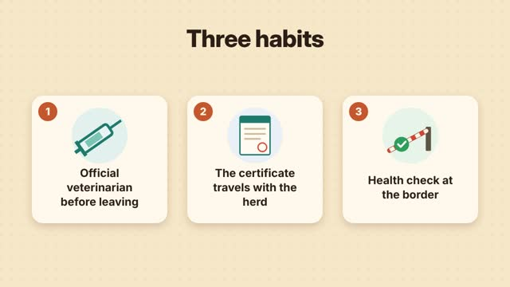 |
Same cream background. The title "Three habits" fades in at the top. Three cream cards with soft shadows pop up in sequence (0.6 s, 1.5 s, 2.4 s), each with a terracotta number badge (1, 2, 3), a pastel circle with an icon and a bold two- or three-line text: 1 a teal syringe, "Official veterinarian before leaving"; 2 a certificate with a teal header and red stamp, "The certificate travels with the herd"; 3 a raised striped barrier with a green check, "Health check at the border". | 1:38.9 Trois réflexes pour un commerce de bétail sûr et ouvert. | — |
| 13 | end 5s Version linéaire (WhatsApp) |
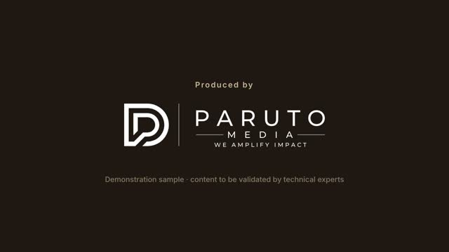 |
Dark brown background (#1E1712). Fade in, centred: small letter-spaced "Produced by" in muted beige, the Paruto Media logo in white below it (use the uploaded paruto-media-logo-white.svg; if no file is uploaded, set "PARUTO MEDIA" in white, wide letter-spacing), then a small grey line: "Demonstration sample · content to be validated by technical experts". | — | — |
Storyboard · Moussa’s Journey
Moussa’s Journey
Every shot of the module, interactive branches included: frames taken from the animation, visual direction, narration, on-screen text and interactions. Deliverable 1, to be validated with ARAA’s experts.
Branching map
| Shot | Segment | Frames | Visual direction | Narration and captions | On-screen text |
|---|---|---|---|---|---|
| 1 | title 7s Linear version (WhatsApp) |
|
Dawn over the Sahel: sky gradient from #E7834A at the top to #F9D59C at the horizon, a large soft sun rising slowly, two flat acacia trees in dark olive silhouette, and five small dark-brown zebu cattle walking left to right along the horizon in a slow loop. From 0.8 s the title fades and slides up into the upper third: a small letter-spaced kicker "PARUTO MEDIA", the title "Moussa’s Journey" (very large, extra bold, #2B1E16) and the subtitle "Animal health rules for the livestock trade in West Africa" beneath it. | 0:01.2 Moussa’s journey: the animal health rules of the livestock trade. | — |
| 2 | meet 9.5s Linear version (WhatsApp) |
|
Daytime savanna: warm sky (#F2C584 to #FCEFD8), soft sand hills (#E9C189), ochre ground (#E2A564) with darker foreground (#D6934F), two green acacias and two small market stalls far right. Moussa walks in from the left and stops left of centre: a West African livestock trader in a long indigo boubou (#2E3A87), cream turban and a wooden staff. Six zebu cattle (white, tan and dark brown, with humps and lyre-shaped horns) walk in from the left in two rows and settle in the centre. At 3.6 s a cream speech-bubble name tag pops above Moussa: "Moussa · livestock trader". At 5.6 s a teal pill badge with a small cattle icon pops above the herd: "× 40 cattle". | 0:07.4 This is Moussa, a livestock trader in the Sahel. 0:11.5 He wants to sell 40 cattle at a big market across the border. |
— |
| 3 | diseases 9s Linear version (WhatsApp) |
|
Abstract map board, not a real map: cream background (#FBF1DF) with a fine dot pattern. Five round town markers (cream circles with a small terracotta house icon) pop in, linked by six curved sand-coloured routes that draw on one after another. Tiny cattle walk along the routes continuously. From 3 s, red spiky virus icons appear riding with three of the animals and pulse; the routes those animals travel turn red as they go. From 4.6 s three cream pill labels with a red dot slide in at top left, one by one: "Contagious bovine pleuropneumonia", "Foot-and-mouth disease", "Peste des petits ruminants". No country borders, names or flags. | 0:16.8 Animals travel from country to country… and diseases travel with them. 0:20.9 One sick animal can infect other herds all along the route. |
— |
| 4 | choice1 9.3s (pause) Linear version (WhatsApp) |
The savanna from the previous scene, herd and Moussa idle (the name tag and badge are gone). A large cream card (rounded corners, soft shadow) slides down into the upper half. Small teal uppercase label "Choice", the question in large bold text, then two option rows with numbered dark circles: 1 and 2 (texts below). From 1.4 s to 4.4 s show the line "Pause the video and choose: 1 or 2?" with a 3, 2, 1 countdown in an orange ring. At 4.6 s option 2 turns green with a white check mark in a green circle; option 1 dims to half opacity. | 0:25.8 Before leaving, what should Moussa do? 0:30.3 Answer 2: the health check starts before the journey. |
Before leaving, what should Moussa do? 1. Leave now and sort out the papers at the border 2. Have an official veterinarian examine and vaccinate the animals Interaction 1 → wrong, blocked1 2 → correct, vet |
|
| 5 | blocked1 9.4s Interactive version only |
|
Branch: the consequence of a wrong choice, then back to the choice. | +0.3s Without a health certificate, the herd is stopped at the border. +4.2s Checks, waiting, possible quarantine: Moussa loses time and money. |
— Interaction Branch: the consequence of a wrong choice, then back to the choice. |
| 6 | vet 15.6s Linear version (WhatsApp) |
Same savanna, five cattle standing still, Moussa on the left. The official veterinarian walks in from the left: white coat, teal cap, teal trousers, stethoscope, clipboard. He stops in front of each front cow in turn (about 2.0 s, 3.6 s, 5.2 s), arm raised as if examining, and a green circle with a white check pops above each cow (2.4 s, 4.0 s, 5.6 s). At 3.0 s a pale-teal pill with a syringe icon pops: "Vaccinated". At 6.0 s a certificate card bounces in at upper right: cream paper, teal header reading "INTERNATIONAL ANIMAL HEALTH CERTIFICATE", grey text lines drawing on one by one, three small dots and "× 40", then at 7.3 s a red round stamp with a check slams on (scale from big to normal, tilted), and at 7.7 s a blue handwritten signature draws on. At 10.4 s the certificate shrinks and flies into Moussa's hand. | 0:35.1 Moussa calls the official veterinarian, who examines and vaccinates each animal. 0:40.4 The animals are healthy: the veterinarian issues an international animal health certificate. 0:46.2 The certificate travels with the herd for the whole journey. |
— | |
| 7 | borderArrive 6s Linear version (WhatsApp) |
|
A border post on a dusty road: on the right a small cream building with a terracotta roof and a window, a teal sign on the roof reading "BORDER", a flagpole with a plain teal-and-yellow flag (not any real country's flag), and a red-and-white striped barrier arm lowered across the road from a dark post. A veterinary border officer in a khaki uniform and peaked cap stands to the right of the barrier, facing left. Moussa and the herd walk in from the left and stop in front of the barrier. | 0:50.7 At the border, a veterinary officer checks the documents and the animals. | — |
| 8 | choice2 8s (pause) Interactive version only |
+0.3s The officer asks for the documents. What does Moussa show? | The officer asks for the documents. What does Moussa show? 1. The market sales receipt 2. The international animal health certificate Interaction 1 → wrong, blocked2 2 → correct, borderCross |
||
| 9 | blocked2 7.5s Interactive version only |
|
Branch: the consequence of a wrong choice, then back to the choice. | +0.3s A sales receipt does not prove the animals are healthy. +3.9s Without a certificate, the herd cannot cross. |
— Interaction Branch: the consequence of a wrong choice, then back to the choice. |
| 10 | borderCross 12.2s Linear version (WhatsApp) |
|
Continuing the border scene. At 0.1 s the certificate (same design, now with the red stamp and signature) pops up between Moussa and the officer; Moussa holds his arm out to hand it over. From 0.7 s to 1.9 s a magnifying glass sweeps across it. At 2.0 s a green rectangular stamp "VALID" slams onto the certificate, then the certificate fades. From 2.6 s to 3.6 s the barrier arm swings up. From 3.4 s Moussa and the herd walk through and out of frame to the right while the officer waves. | 0:56.6 The certificate is valid and the animals are healthy: the barrier lifts. 1:02.2 ECOWAS harmonised rules give health checks a common framework across the region. |
— |
| 11 | quiz 30s Linear version (WhatsApp) |
Warm cream background (#F7E7C9) with a dot pattern and two very large, faint, slowly rocking question marks. Three questions, 10 s each. Each fades in as a centred cream card: teal label "Quiz · 1/3" (2/3, 3/3), the question in large bold text, and three option rows with dark lettered circles A, B, C. At 4.3 s into each question the correct option turns green with a white check, the others stay, and a one-line explanation appears under the options. Each card fades out in its last 0.3 s. | Who issues the animal health certificate? … Only an official veterinarian can attest to the animals’ health. Why are animals checked at borders? … Checks protect herds, consumers and markets. Which text harmonises health rules in the ECOWAS area? … It sets the rules for animal health, plant health and food safety. |
1. Who issues the animal health certificate? A. The trader · B. An official veterinarian · C. The market chief 2. Why are animals checked at borders? A. To stop diseases from spreading · B. To slow trade down · C. To count the animals 3. Which text harmonises health rules in the ECOWAS area? A. Regulation C/REG.21/11/10 · B. The highway code · C. The market by-laws Interaction Three questions. Interactive: the viewer answers, sees the correction and a score. Linear: the right answer is revealed after a few seconds. |
|
| 12 | recap 9s Linear version (WhatsApp) |
|
Same cream background. The title "Three habits" fades in at the top. Three cream cards with soft shadows pop up in sequence (0.6 s, 1.5 s, 2.4 s), each with a terracotta number badge (1, 2, 3), a pastel circle with an icon and a bold two- or three-line text: 1 a teal syringe, "Official veterinarian before leaving"; 2 a certificate with a teal header and red stamp, "The certificate travels with the herd"; 3 a raised striped barrier with a green check, "Health check at the border". | 1:38.9 Three habits for a safe and open livestock trade. | — |
| 13 | end 5s Linear version (WhatsApp) |
Dark brown background (#1E1712). Fade in, centred: small letter-spaced "Produced by" in muted beige, the Paruto Media logo in white below it (use the uploaded paruto-media-logo-white.svg; if no file is uploaded, set "PARUTO MEDIA" in white, wide letter-spacing), then a small grey line: "Demonstration sample · content to be validated by technical experts". | — | — |